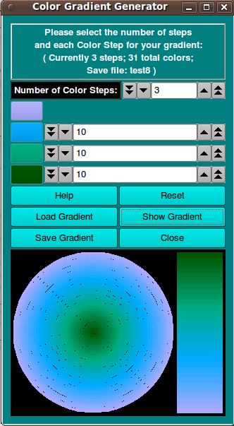

UltraScan Color Gradient Generator:
Color gradients can be generated for the purpose of providing
a third dimension to selected UltraScan III program graphs.
Color gradients are specified with a start color and a number of
color steps, each one having an end color and a number of points.
The total number of colors in the gradient is the sum of step points
plus one for the start color. The steps are saved in an XML file, with
an option to save a PNG file with the color legend.
|

|
-
Number of Color Steps: Choose the total number of
color steps.
-
Select Starting Color: Click on this button to choose
a start gradient color from a standard color dialog. The chosen
color appears in the button and the gradient displays below.
-
Select Step Color: Click on any of the step color buttons
to choose an end color for the step via a standard color dialog.
-
Number of Points in this Step: Indicate the number of
points for each step by setting the counter to the right of
the step color button.
-
Help: Display detailed color gradient generator help.
-
Reset: Remove all color and points selections and revert
to a single one-point step with color black.
-
Load Gradient Load gradient selections from a previously
saved color gradient XML file. The dialog initiated is a
Load Color Map dialog.
-
Show Gradient Draw a representation of the currently
specified color gradient in the bottommost panel. The panel
will adjust its size so the concentric circles portion is square
and there is room to the right for a vertical color legend,
with start color at the bottom.
-
Save Gradient Save the current color gradient to an XML
file. A standard file dialog is used. After giving the name of
the XML file, you will be given the option of also saving a PNG
file that contains the color legend at the displayed size and
with the same base name as the XML file. The dialog initiated is a
Save Color Map dialog.
-
Close Close the color gradient generator session. If you
have not saved the gradient to a file, you will be given a final
opportunity to do so.
|
 Manual
Manual